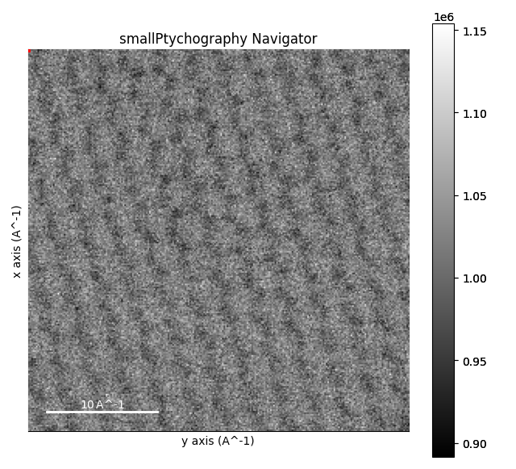
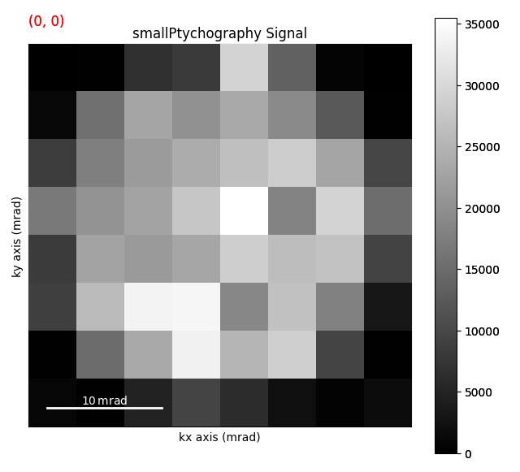

Note
Go to the end to download the full example code.
Loading Data with HyperSpy#
This example demonstrates how to load and visualize data using the HyperSpy library.
import hyperspy.api as hs
from em_database.data import BilayerWS2
# Load a dataset using HyperSpy
dataset = BilayerWS2()
data_path = dataset.download() # Download the dataset if not already available
data = hs.load(data_path)
data
0%| | 0.00/12.5M [00:00<?, ?B/s]
0%| | 41.0k/12.5M [00:00<00:44, 278kB/s]
1%|▎ | 98.3k/12.5M [00:00<00:30, 409kB/s]
2%|▋ | 205k/12.5M [00:00<00:18, 660kB/s]
3%|█▎ | 434k/12.5M [00:00<00:09, 1.23MB/s]
7%|██▋ | 893k/12.5M [00:00<00:05, 2.30MB/s]
14%|█████▎ | 1.80M/12.5M [00:00<00:02, 4.39MB/s]
18%|██████▋ | 2.25M/12.5M [00:00<00:02, 3.93MB/s]
21%|███████▉ | 2.66M/12.5M [00:00<00:02, 3.66MB/s]
24%|█████████ | 3.04M/12.5M [00:01<00:03, 2.65MB/s]
27%|█████████▉ | 3.35M/12.5M [00:01<00:04, 2.08MB/s]
29%|██████████▋ | 3.60M/12.5M [00:01<00:06, 1.34MB/s]
30%|███████████▏ | 3.79M/12.5M [00:02<00:06, 1.25MB/s]
32%|████████████ | 3.96M/12.5M [00:02<00:10, 837kB/s]
33%|████████████▍ | 4.08M/12.5M [00:02<00:10, 787kB/s]
34%|████████████▋ | 4.19M/12.5M [00:02<00:11, 692kB/s]
34%|█████████████ | 4.28M/12.5M [00:03<00:11, 707kB/s]
35%|█████████████▎ | 4.39M/12.5M [00:03<00:10, 758kB/s]
36%|█████████████▊ | 4.55M/12.5M [00:03<00:08, 921kB/s]
37%|██████████████▏ | 4.67M/12.5M [00:03<00:10, 744kB/s]
38%|██████████████▍ | 4.76M/12.5M [00:03<00:10, 753kB/s]
39%|██████████████▊ | 4.85M/12.5M [00:04<00:15, 478kB/s]
41%|███████████████▌ | 5.12M/12.5M [00:04<00:10, 736kB/s]
42%|███████████████▊ | 5.22M/12.5M [00:04<00:09, 733kB/s]
42%|████████████████▏ | 5.31M/12.5M [00:04<00:10, 699kB/s]
43%|████████████████▍ | 5.41M/12.5M [00:04<00:10, 695kB/s]
44%|████████████████▊ | 5.51M/12.5M [00:04<00:09, 763kB/s]
45%|█████████████████ | 5.61M/12.5M [00:04<00:08, 788kB/s]
46%|█████████████████▎ | 5.70M/12.5M [00:05<00:08, 772kB/s]
46%|█████████████████▌ | 5.78M/12.5M [00:05<00:08, 779kB/s]
47%|█████████████████▉ | 5.88M/12.5M [00:05<00:08, 810kB/s]
48%|██████████████████▎ | 6.01M/12.5M [00:05<00:07, 877kB/s]
50%|██████████████████▎ | 6.18M/12.5M [00:05<00:05, 1.06MB/s]
51%|██████████████████▋ | 6.31M/12.5M [00:05<00:05, 1.09MB/s]
51%|███████████████████ | 6.43M/12.5M [00:05<00:06, 1.00MB/s]
52%|███████████████████▊ | 6.53M/12.5M [00:05<00:06, 928kB/s]
53%|████████████████████▏ | 6.63M/12.5M [00:05<00:06, 942kB/s]
54%|████████████████████▌ | 6.74M/12.5M [00:06<00:06, 954kB/s]
55%|████████████████████▎ | 6.87M/12.5M [00:06<00:05, 1.03MB/s]
56%|████████████████████▋ | 6.98M/12.5M [00:06<00:05, 1.04MB/s]
57%|█████████████████████▏ | 7.14M/12.5M [00:06<00:04, 1.08MB/s]
58%|█████████████████████▍ | 7.25M/12.5M [00:06<00:05, 1.03MB/s]
60%|██████████████████████▏ | 7.50M/12.5M [00:06<00:03, 1.35MB/s]
62%|██████████████████████▊ | 7.71M/12.5M [00:06<00:03, 1.53MB/s]
63%|███████████████████████▎ | 7.87M/12.5M [00:06<00:03, 1.27MB/s]
64%|███████████████████████▋ | 8.00M/12.5M [00:07<00:03, 1.15MB/s]
65%|████████████████████████▏ | 8.16M/12.5M [00:07<00:03, 1.24MB/s]
67%|████████████████████████▋ | 8.34M/12.5M [00:07<00:02, 1.38MB/s]
68%|█████████████████████████▏ | 8.49M/12.5M [00:07<00:02, 1.36MB/s]
69%|█████████████████████████▌ | 8.63M/12.5M [00:07<00:02, 1.29MB/s]
70%|█████████████████████████▉ | 8.77M/12.5M [00:07<00:03, 1.18MB/s]
71%|███████████████████████████ | 8.89M/12.5M [00:07<00:03, 987kB/s]
73%|██████████████████████████▉ | 9.10M/12.5M [00:07<00:02, 1.18MB/s]
74%|███████████████████████████▎ | 9.22M/12.5M [00:08<00:02, 1.18MB/s]
75%|███████████████████████████▋ | 9.35M/12.5M [00:08<00:02, 1.10MB/s]
76%|████████████████████████████▏ | 9.52M/12.5M [00:08<00:02, 1.22MB/s]
77%|████████████████████████████▌ | 9.65M/12.5M [00:08<00:02, 1.24MB/s]
78%|████████████████████████████▉ | 9.78M/12.5M [00:08<00:02, 1.15MB/s]
80%|█████████████████████████████▍ | 9.93M/12.5M [00:08<00:02, 1.25MB/s]
81%|█████████████████████████████▉ | 10.1M/12.5M [00:08<00:01, 1.36MB/s]
82%|██████████████████████████████▎ | 10.2M/12.5M [00:08<00:01, 1.38MB/s]
83%|██████████████████████████████▊ | 10.4M/12.5M [00:08<00:01, 1.39MB/s]
84%|███████████████████████████████▏ | 10.5M/12.5M [00:09<00:01, 1.33MB/s]
85%|███████████████████████████████▌ | 10.7M/12.5M [00:09<00:01, 1.32MB/s]
87%|████████████████████████████████ | 10.8M/12.5M [00:09<00:01, 1.33MB/s]
88%|████████████████████████████████▍ | 10.9M/12.5M [00:09<00:01, 1.06MB/s]
89%|████████████████████████████████▊ | 11.1M/12.5M [00:09<00:01, 1.08MB/s]
89%|█████████████████████████████████ | 11.2M/12.5M [00:09<00:01, 1.07MB/s]
90%|█████████████████████████████████▍ | 11.3M/12.5M [00:09<00:01, 1.10MB/s]
91%|█████████████████████████████████▊ | 11.4M/12.5M [00:09<00:00, 1.09MB/s]
93%|██████████████████████████████████▎ | 11.6M/12.5M [00:10<00:00, 1.24MB/s]
94%|██████████████████████████████████▊ | 11.7M/12.5M [00:10<00:00, 1.32MB/s]
95%|███████████████████████████████████▏ | 11.9M/12.5M [00:10<00:00, 1.27MB/s]
96%|████████████████████████████████████▌ | 12.0M/12.5M [00:10<00:00, 846kB/s]
97%|████████████████████████████████████▊ | 12.1M/12.5M [00:10<00:00, 891kB/s]
98%|████████████████████████████████████▍| 12.3M/12.5M [00:10<00:00, 1.06MB/s]
100%|████████████████████████████████████▊| 12.4M/12.5M [00:10<00:00, 1.08MB/s]
0%| | 0.00/12.5M [00:00<?, ?B/s]
100%|█████████████████████████████████████| 12.5M/12.5M [00:00<00:00, 37.4GB/s]
WARNING | Hyperspy | This file contains a signal provided by the pyxem Python package that is not currently installed. The signal will be loaded into a generic HyperSpy signal. Consider installing pyxem to load this dataset into its original signal class. (hyperspy.io:949)
WARNING | Hyperspy | `signal_type='electron_diffraction'` not understood. See `hs.print_known_signal_types()` for a list of installed signal types or https://github.com/hyperspy/hyperspy-extensions-list for the list of all hyperspy extensions providing signals. (hyperspy.io:893)
<Signal2D, title: , dimensions: (246, 246|8, 8)>
Display the dataset
data.plot()
- 
- 
WARNING | Hyperspy | Numba is not installed, falling back to non-accelerated implementation. (hyperspy.decorators:256)
WARNING | Hyperspy | Numba is not installed, falling back to non-accelerated implementation. (hyperspy.decorators:256)
WARNING | Hyperspy | Numba is not installed, falling back to non-accelerated implementation. (hyperspy.decorators:256)
WARNING | Hyperspy | Numba is not installed, falling back to non-accelerated implementation. (hyperspy.decorators:256)
WARNING | Hyperspy | Numba is not installed, falling back to non-accelerated implementation. (hyperspy.decorators:256)
WARNING | Hyperspy | Numba is not installed, falling back to non-accelerated implementation. (hyperspy.decorators:256)
WARNING | Hyperspy | Numba is not installed, falling back to non-accelerated implementation. (hyperspy.decorators:256)
WARNING | Hyperspy | `signal_type='electron_diffraction'` not understood. See `hs.print_known_signal_types()` for a list of installed signal types or https://github.com/hyperspy/hyperspy-extensions-list for the list of all hyperspy extensions providing signals. (hyperspy.io:893)
WARNING | Hyperspy | `signal_type='electron_diffraction'` not understood. See `hs.print_known_signal_types()` for a list of installed signal types or https://github.com/hyperspy/hyperspy-extensions-list for the list of all hyperspy extensions providing signals. (hyperspy.io:893)
Total running time of the script: (0 minutes 37.142 seconds)